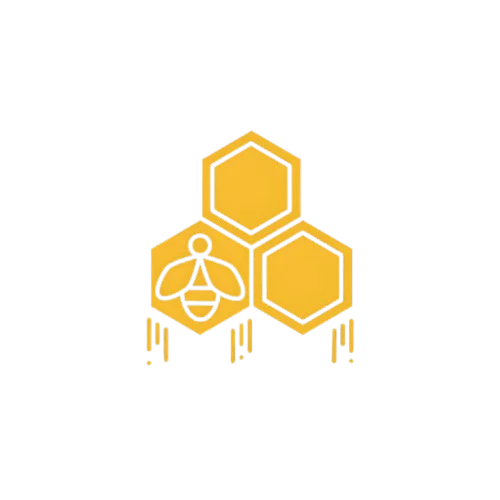

Strategy & SWOT
Market, competitor and audience analysis, written down before anything is designed.

BeeviroBeeviro is a client-generating system, not a content service. We build the whole path — diagnosis, positioning, creative, funnel and media — then run it against numbers that matter.
Every engagement runs the same six stages. Nothing gets designed before the market is read, and nothing gets bought before the position is decided. Open any client below and you will see these six again, filled in with their specifics.
Market, competitor and audience analysis, written down before anything is designed.
Logo systems, colour, type and guidelines — built bilingual where the market needs it.
Meta, TikTok and Google, structured by funnel stage and consolidated into what works.
Designs, reels, photoshoots and behind-the-scenes, produced at campaign volume.
Conversion-focused sites, landing pages and sales funnels with qualifying built in.
Creator-style and celebrity content where borrowed trust beats brand voice.
Campaign reporting against KPIs, with budget moved to the winners monthly.
The one claim a brand can own and defend — usually the hardest part of the job.
Open a card to walk the whole engagement — first contact, diagnosis, positioning, build, launch, outcome — with the designs and the campaign numbers attached. Where a figure is a target rather than a delivered result, it says so.
Unscripted and unedited beyond a trim. Press play — nothing starts on its own.
A sample of the design work, pulled straight from the client deliverable folders. Click any tile to open it.
“Beeviro’s client-generating system isn’t just content. We transform targeted audiences into loyal customers through meaningful interactions, delivering real, measurable results.”
Tell us the number you need to move. We will tell you what it takes to move it — and show you the client we did it for.